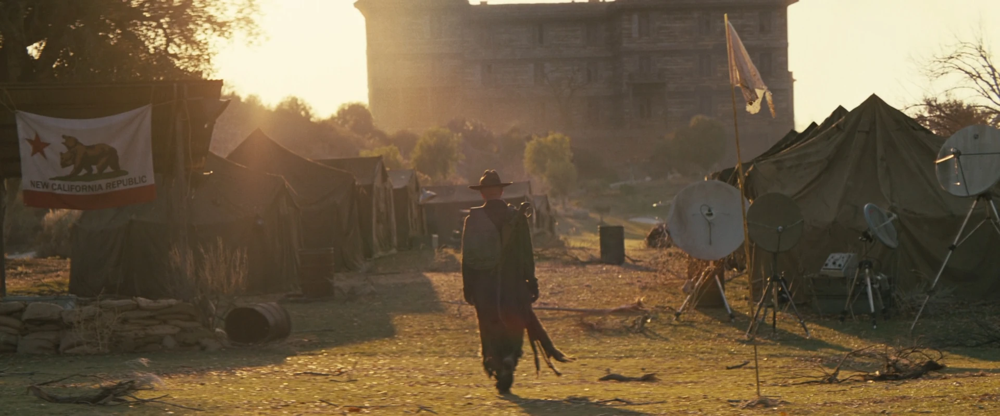
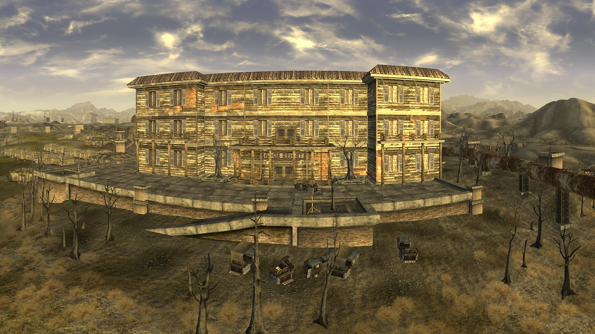

ハウス・リゾート
House Resort
LOCATION DATA

地域:
モハビ・ウェイストランド
所属:
キャンプ・ゴルフ
元所有者:
Mr.ハウス
勢力(2281):
新カリフォルニア共和国 (NCR)
登場:
Fallout: New Vegas
Fallout TVシリーズ
Fallout TVシリーズ
ハウス・リゾート (House Resort) は、モハビ・ウェイストランドの「キャンプ・ゴルフ」の敷地内にある建物のロケーションです。TVドラマ版シーズン2にも登場します。
背景
戦前の時代、「ロバート・ハウス（Mr.ハウス）」が個人的に所有していた高級リゾート施設です。この建物は、レイク・ラスベガスの北西の湖畔に建てられており、ゴルフコース等を含む広大な保養施設の中心でした。
「大戦」後、しばらく放棄されていましたが、2281年（New Vegas時代）にはモハビに進出した新カリフォルニア共和国（NCR）がこの施設を接収。彼らはこのリゾートを「キャンプ・ゴルフ（Camp Golf）」と名付け、特にエリート部隊である**NCRレンジャー**たち（とハロン総長）の居住・司令部として利用しています。
一般の歩兵（トルーパー）たちが外の「キャンプ・ゴルフのテント」で貧相な寝起きをしているのに対し、レンジャーたちはこの豪華な戦前のリゾートビルを満喫しており、NCR内部の階級格差を象徴する場所となっています。
TVシリーズでの登場 (シーズン2)
TVドラマ版のシーズン2において、モハビ地域を旅する登場人物たちがこのリゾート跡の近辺を通過・訪問します。（詳細な役割は劇中で描写されます）。巨大な塔を持つ美しいリゾート建築は、荒廃した砂漠の中で異彩を放っています。

Impression
ゲーム内（NV）では、NCRレンジャーの最高峰である「NCRベテランレンジャー」たちがうろついている威圧感のある場所です。TVドラマ版でも特徴的な建物の外観が実写で再現されており、Mr.ハウスがかつてどれほどの資産と権力を持っていたかを視覚的に証明する素晴らしいランドマークです。
ゲーム内（NV）では、NCRレンジャーの最高峰である「NCRベテランレンジャー」たちがうろついている威圧感のある場所です。TVドラマ版でも特徴的な建物の外観が実写で再現されており、Mr.ハウスがかつてどれほどの資産と権力を持っていたかを視覚的に証明する素晴らしいランドマークです。
Category:Fallout: New Vegas locations
Category:Camp Golf buildings
Category:Fallout TV series locations